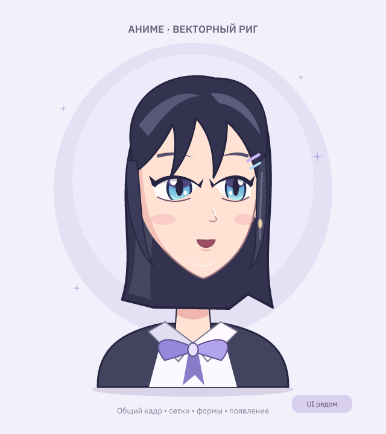

Деформеры и общий кадр
Официальная документация Live2D подключена как каталог источников и решений Motif: параметры, опорные формы, иерархия, сочетания и маски.
Рисуйте ключевые кадры прямо в векторе. Одна сетка меняет несколько деталей, а общие параметры используют подготовленные формы в разных клипах.
Первый этап, 29 октября 2026. Сетка на группе содержит девять управляющих точек. Она плавно деформирует потомков и складывается с сетками родительских групп. UI-инструменты, слои, маски, стили, кости и 2.5D остаются доступны.
Аниме-лицо
Файл → Новое → Персонажи → Аниме-лицо. Исходник: character-anime.msc. Сохраните отдельную копию. Это оригинальная заготовка: 84 объекта, отдельные сетки головы, черт лица и глаз; пять параметров — поворот, взгляд, моргание, рот и брови.

Idle — спокойное движение; Expressions — крайние положения и сочетания; Talk — формы рта. Рядом размещена UI-кнопка с Hover и Press для проверки смешанной сцены. Параметры появляются при выборе персонажа или его деталей; профиль «Всё» показывает все инструменты.
Один текущий кадр
Выбранный клип и время общие для Рисования, Настройки и Анимации, включая UI. Переключение пространства сохраняет позу и ставит воспроизведение на паузу. При скрытом таймлайне доступны компактные управление клипом и время; полную панель включает меню «Панели».
Автоключ включён по умолчанию: перемещение, цвет, масштаб, числовые свойства, параметры и смещения сетки записываются в текущий момент. Первый ключ после нуля добавляет прежнее базовое значение на нуле. Если автоключ выключен, получается временная проба: её можно записать ромбом или командой «Записать позу». Проба сохраняется между пространствами, но сбрасывается при смене времени или клипа.
Прямые ключи детали имеют приоритет над связями параметров. Никакого запрета двигать связанную деталь в рисовании нет. Иерархия, состав групп, роли UI, одежда, общие цвета-переменные и другие операции без анимационных свойств по-прежнему меняют структуру или исходник целиком; они могут повлиять на существующее движение.
Настроить сетку
- Выделите обычную группу в слоях. В свойствах откройте «Деформер группы» → «Добавить сетку 3×3». Сетка создаётся вокруг локального начала группы с запасом по текущим границам.
- Включите «Править сетку на холсте» и тяните точки. Изменение X и Y одной точки записывается одним действием Undo. При выбранном клипе это ключи текущего кадра. Esc завершает работу с сеткой или отменяет незавершённое перетаскивание.
- Для повторного использования нажмите «Создать параметр сетки». Откроется Настройка с опорой +1. Тяните точки, затем выберите −1 или 0 и подготовьте другие формы. Кнопка «Вернуться к кадру клипа» завершает правку опор. Размер W/H сетки задаётся в Настройке и относится ко всему ригу.
- Анимируйте ползунок созданного параметра вместо девяти отдельных точек. Опоры общие для всех клипов. Если на этих точках уже есть прямые ключи, они сохраняют приоритет; удалите ненужные прямые ключи, чтобы увидеть результат параметра.
Новая деталь внутри группы наследует её сетку без индивидуальных связей. Для рта, глаза или пряди создавайте вложенные группы. В примере выбирайте head, features, eye_l или eye_r. Можно использовать прежние кости и орбиты вместе с сеткой.
Нарисовать форму в кадре
В Рисовании выберите контур, нажмите Enter и измените узлы. При выбранном клипе сохраняется отдельная форма и ключ «Форма контура». Эта явная операция записывается и при отключённом автоключе. Исходный контур остаётся формой 0; при совпадающей структуре пути интерполируются сами узлы и ручки Безье. При изменении топологии используется существующий морфинг с пересэмплированием — переход стоит проверить визуально.
Формы хранятся на объекте, а клипы ссылаются на них. Повторная правка того же ключа переиспользует форму, если на неё больше никто не ссылается; общая форма не перезаписывается неявно. Ключи формы можно перемещать на таймлайне, но их номера не редактируются как обычная числовая кривая.
Появление объекта
Создание, вставка или копирование нового видимого объекта на времени больше нуля добавляет дорожку «Появление»: до этого момента объект скрыт, с этого момента виден. Для нового дерева достаточно ключа на его корне. Это дискретное переключение, не плавное изменение прозрачности.
Перетащите ключ появления на ноль, чтобы объект существовал с начала клипа. Начальное «скрыт» будет заменено. У существовавших ранее объектов новые дорожки сами не создаются: их видимость и прозрачность остаются обычными свойствами. Появление принадлежит выбранному клипу; другие клипы не переписываются.
Скрипт
artboard "Формы" 320x320 game
parameter bend "Наклон" range -1 1 default 0 value 0
group head at 160 160 deform 200 200 {
path face d "M -50 -40 L 50 -40 L 0 70 Z" forms "M -60 -35 L 60 -35 L 0 80 Z" fill #ffe2d4
}
driver bend {
head.warp-x4 -1: -35 | 0: 0 | 1: 35
}
anim Test 2s {
bend.value 0: 0 | 1: 1 | 2: 0
face.contour 0: 0 | 1: 1 | 2: 0
head.visible 0: 0 hold | 0.5: 1
}deform W H задаётся на group. warp-x0…warp-y8 — смещения контрольных точек по строкам, слева направо. forms содержит контуры в кавычках, contour — номер формы: 0 исходная, остальные с 1. Ключи и опоры contour должны содержать существующие целые номера; интерполяция идёт между указанными формами, даже если их номера не соседние. visible меньше 0.5 означает скрыт, от 0.5 — виден.
Границы первого этапа
- Сетка фиксированная 3×3, с квадратичным сглаживанием. Точки служат управляющими ручками: середина контура не обязана проходить через среднюю точку сетки. Произвольной сетки и редактора весов для неё пока нет.
- Деформация выполняется после морфинга, форм, костей и проекции; при симуляции — после неё. Вложенные сетки применяются изнутри наружу. Исходные кривые сохраняются; отображаемый путь уточняется ломаной с целевой погрешностью 0.15 единицы артборда и ограничением глубины разбиения. Обводки и градиенты используют прежние правила Motif.
- Сильное складывание сетки может дать самопересечения и неоднозначное обратное преобразование при правке узлов. Не используйте полностью схлопнутый глаз как удобное положение для редактирования его контура: сначала откройте глаз.
- Это ещё не полный аналог Live2D. Нужны двумерные таблицы сочетаний, корректирующие формы, управление порядком деталей, более развитые маски и процедурные генераторы. Большой поворот лица требует дополнительных рисунков или ракурсов.
Проверка пользователем
- Expressions, 1 с: переключите три пространства. Поза и время должны совпасть. Измените узел контура в рисовании; проверьте начало клипа, новый ключ, Undo/Redo и повторное открытие файла.
- Выберите head → «Править сетку на холсте». Перетащите точку, проиграйте клип. В Настройке выберите опору turn и проверьте, что правится общая связь, а время клипа не меняется.
- На 1 с создайте кружок. До 1 с его не видно. Перенесите ключ «Появление» на ноль: кружок виден с начала. Undo возвращает прежний момент.
- Просмотрите Expressions и Talk: глаза при повороте, закрытые веки, рот, волосы. У UI-кнопки проверьте Hover/Press, цвет, контекстное окно и независимый предпросмотр.
Автоматические тесты проверяют запись через ввод мыши, общий кадр, историю, формы, вложенные и отражённые сетки, композицию с костями, переходы клипов и смешанный UI. Удобство редактора и художественную оценку выполняет пользователь.